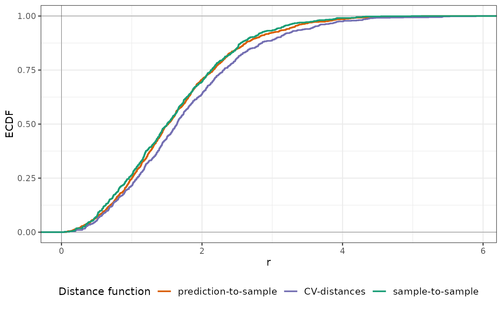

This function implements the kNNDM algorithm and returns the necessary indices to perform a k-fold NNDM CV for map validation.
Usage
knndm(
tpoints,
modeldomain = NULL,
predpoints = NULL,
space = "geographical",
k = 10,
maxp = 0.5,
clustering = "hierarchical",
linkf = "ward.D2",
samplesize = 1000,
sampling = "regular",
useMD = FALSE
)Arguments
- tpoints
sf or sfc point object, or data.frame if space = "feature". Contains the training points samples.
- modeldomain
sf polygon object or SpatRaster defining the prediction area. Optional; alternative to predpoints (see Details).
- predpoints
sf or sfc point object, or data.frame if space = "feature". Contains the target prediction points. Optional; alternative to modeldomain (see Details).
- space
character. Either "geographical" or "feature".
- k
integer. Number of folds desired for CV. Defaults to 10.
- maxp
numeric. Maximum fold size allowed, defaults to 0.5, i.e. a single fold can hold a maximum of half of the training points.
- clustering
character. Possible values include "hierarchical" and "kmeans". See details.
- linkf
character. Only relevant if clustering = "hierarchical". Link function for agglomerative hierarchical clustering. Defaults to "ward.D2". Check `stats::hclust` for other options.
- samplesize
numeric. How many points in the modeldomain should be sampled as prediction points? Only required if modeldomain is used instead of predpoints.
- sampling
character. How to draw prediction points from the modeldomain? See `sf::st_sample`. Only required if modeldomain is used instead of predpoints.
- useMD
boolean. Only for `space`=feature: shall the Mahalanobis distance be calculated instead of Euclidean? Only works with numerical variables.
Value
An object of class knndm consisting of a list of eight elements: indx_train, indx_test (indices of the observations to use as training/test data in each kNNDM CV iteration), Gij (distances for G function construction between prediction and target points), Gj (distances for G function construction during LOO CV), Gjstar (distances for modified G function during kNNDM CV), clusters (list of cluster IDs), W (Wasserstein statistic), and space (stated by the user in the function call).
Details
knndm is a k-fold version of NNDM LOO CV for medium and large datasets. Brielfy, the algorithm tries to find a k-fold configuration such that the integral of the absolute differences (Wasserstein W statistic) between the empirical nearest neighbour distance distribution function between the test and training data during CV (Gj*), and the empirical nearest neighbour distance distribution function between the prediction and training points (Gij), is minimised. It does so by performing clustering of the training points' coordinates for different numbers of clusters that range from k to N (number of observations), merging them into k final folds, and selecting the configuration with the lowest W.
Using a projected CRS in `knndm` has large computational advantages since fast nearest neighbour search can be done via the `FNN` package, while working with geographic coordinates requires computing the full spherical distance matrices. As a clustering algorithm, `kmeans` can only be used for projected CRS while `hierarchical` can work with both projected and geographical coordinates, though it requires calculating the full distance matrix of the training points even for a projected CRS.
In order to select between clustering algorithms and number of folds `k`, different `knndm` configurations can be run and compared, being the one with a lower W statistic the one that offers a better match. W statistics between `knndm` runs are comparable as long as `tpoints` and `predpoints` or `modeldomain` stay the same.
Map validation using `knndm` should be used using `CAST::global_validation`, i.e. by stacking all out-of-sample predictions and evaluating them all at once. The reasons behind this are 1) The resulting folds can be unbalanced and 2) nearest neighbour functions are constructed and matched using all CV folds simultaneously.
If training data points are very clustered with respect to the prediction area and the presented `knndm` configuration still show signs of Gj* > Gij, there are several things that can be tried. First, increase the `maxp` parameter; this may help to control for strong clustering (at the cost of having unbalanced folds). Secondly, decrease the number of final folds `k`, which may help to have larger clusters.
The `modeldomain` is either a sf polygon that defines the prediction area, or alternatively a SpatRaster out of which a polygon, transformed into the CRS of the training points, is defined as the outline of all non-NA cells. Then, the function takes a regular point sample (amount defined by `samplesize`) from the spatial extent. As an alternative use `predpoints` instead of `modeldomain`, if you have already defined the prediction locations (e.g. raster pixel centroids). When using either `modeldomain` or `predpoints`, we advise to plot the study area polygon and the training/prediction points as a previous step to ensure they are aligned.
`knndm` can also be performed in the feature space by setting `space` to "feature". Euclidean distances or Mahalanobis distances can be used for distance calculation, but only Euclidean are tested. In this case, nearest neighbour distances are calculated in n-dimensional feature space rather than in geographical space. `tpoints` and `predpoints` can be data frames or sf objects containing the values of the features. Note that the names of `tpoints` and `predpoints` must be the same. `predpoints` can also be missing, if `modeldomain` is of class SpatRaster. In this case, the values of of the SpatRaster will be extracted to the `predpoints`. In the case of any categorical features, Gower distances will be used to calculate the Nearest Neighbour distances [Experimental]. If categorical features are present, and `clustering` = "kmeans", K-Prototype clustering will be performed instead.
References
Linnenbrink, J., Milà, C., Ludwig, M., and Meyer, H.: kNNDM: k-fold Nearest Neighbour Distance Matching Cross-Validation for map accuracy estimation, EGUsphere [preprint], https://doi.org/10.5194/egusphere-2023-1308, 2023.
Milà, C., Mateu, J., Pebesma, E., Meyer, H. (2022): Nearest Neighbour Distance Matching Leave-One-Out Cross-Validation for map validation. Methods in Ecology and Evolution 00, 1– 13.
Examples
########################################################################
# Example 1: Simulated data - Randomly-distributed training points
########################################################################
library(sf)
library(ggplot2)
# Simulate 1000 random training points in a 100x100 square
set.seed(1234)
simarea <- list(matrix(c(0,0,0,100,100,100,100,0,0,0), ncol=2, byrow=TRUE))
simarea <- sf::st_polygon(simarea)
train_points <- sf::st_sample(simarea, 1000, type = "random")
pred_points <- sf::st_sample(simarea, 1000, type = "regular")
plot(simarea)
plot(pred_points, add = TRUE, col = "blue")
plot(train_points, add = TRUE, col = "red")
# Run kNNDM for the whole domain, here the prediction points are known.
knndm_folds <- knndm(train_points, predpoints = pred_points, k = 5)
#> Warning: Missing CRS in training or prediction points. Assuming projected CRS.
#> Gij <= Gj; a random CV assignment is returned
knndm_folds
#> knndm object
#> Space: geographical
#> Clustering algorithm: hierarchical
#> Intermediate clusters (q): random CV
#> W statistic: 0.1338
#> Number of folds: 5
#> Observations in each fold: 200 200 200 200 200
plot(knndm_folds)
plot(knndm_folds, type = "simple") # For more accessible legend labels

plot(knndm_folds, type = "simple", stat = "density") # To visualize densities rather than ECDFs
folds <- as.character(knndm_folds$clusters)
ggplot() +
geom_sf(data = simarea, alpha = 0) +
geom_sf(data = train_points, aes(col = folds))
########################################################################
# Example 2: Simulated data - Clustered training points
########################################################################
if (FALSE) { # \dontrun{
library(sf)
library(ggplot2)
# Simulate 1000 clustered training points in a 100x100 square
set.seed(1234)
simarea <- list(matrix(c(0,0,0,100,100,100,100,0,0,0), ncol=2, byrow=TRUE))
simarea <- sf::st_polygon(simarea)
train_points <- clustered_sample(simarea, 1000, 50, 5)
pred_points <- sf::st_sample(simarea, 1000, type = "regular")
plot(simarea)
plot(pred_points, add = TRUE, col = "blue")
plot(train_points, add = TRUE, col = "red")
# Run kNNDM for the whole domain, here the prediction points are known.
knndm_folds <- knndm(train_points, predpoints = pred_points, k = 5)
knndm_folds
plot(knndm_folds)
plot(knndm_folds, type = "simple") # For more accessible legend labels
plot(knndm_folds, type = "simple", stat = "density") # To visualize densities rather than ECDFs
folds <- as.character(knndm_folds$clusters)
ggplot() +
geom_sf(data = simarea, alpha = 0) +
geom_sf(data = train_points, aes(col = folds))
} # }
########################################################################
# Example 3: Real- world example; using a modeldomain instead of previously
# sampled prediction locations
########################################################################
if (FALSE) { # \dontrun{
library(sf)
library(terra)
library(ggplot2)
### prepare sample data:
data(cookfarm)
dat <- aggregate(cookfarm[,c("DEM","TWI", "NDRE.M", "Easting", "Northing","VW")],
by=list(as.character(cookfarm$SOURCEID)),mean)
pts <- dat[,-1]
pts <- st_as_sf(pts,coords=c("Easting","Northing"))
st_crs(pts) <- 26911
studyArea <- rast(system.file("extdata","predictors_2012-03-25.tif",package="CAST"))
pts <- st_transform(pts, crs = st_crs(studyArea))
terra::plot(studyArea[["DEM"]])
terra::plot(vect(pts), add = T)
knndm_folds <- knndm(pts, modeldomain=studyArea, k = 5)
knndm_folds
plot(knndm_folds)
folds <- as.character(knndm_folds$clusters)
ggplot() +
geom_sf(data = pts, aes(col = folds))
#use for cross-validation:
library(caret)
ctrl <- trainControl(method="cv",
index=knndm_folds$indx_train,
savePredictions='final')
model_knndm <- train(dat[,c("DEM","TWI", "NDRE.M")],
dat$VW,
method="rf",
trControl = ctrl)
global_validation(model_knndm)
} # }
########################################################################
# Example 4: Real- world example; kNNDM in feature space
########################################################################
if (FALSE) { # \dontrun{
library(sf)
library(terra)
library(ggplot2)
data(splotdata)
splotdata <- splotdata[splotdata$Country == "Chile",]
predictors <- c("bio_1", "bio_4", "bio_5", "bio_6",
"bio_8", "bio_9", "bio_12", "bio_13",
"bio_14", "bio_15", "elev")
trainDat <- sf::st_drop_geometry(splotdata)
predictors_sp <- terra::rast(system.file("extdata", "predictors_chile.tif",package="CAST"))
terra::plot(predictors_sp[["bio_1"]])
terra::plot(vect(splotdata), add = T)
knndm_folds <- knndm(trainDat[,predictors], modeldomain = predictors_sp, space = "feature",
clustering="kmeans", k=4, maxp=0.8)
plot(knndm_folds)
} # }